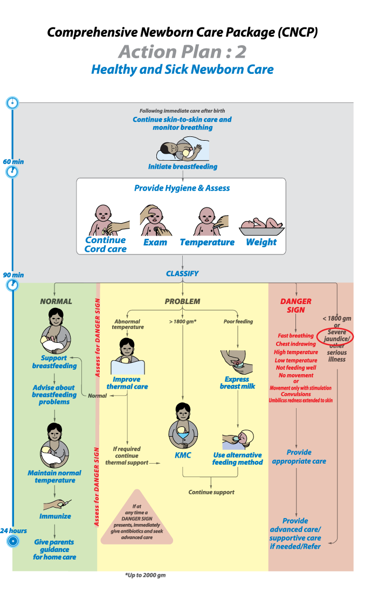

Pic: Action Plan# 2.19
Jaundice is the yellow discoloration of the skin caused by high level of bilirubin in the blood that occurs due to increased breakdown of red blood cells after birth and decreased excretion due to immaturity of the liver enzyme. High level of bilirubin can enter the developing brain and can cause brain damage with lifelong neurologic sequel in infants who survives, and even death if left un-treated.
About 60% term and 80% preterm babies develop jaundice during the first week of life. Jaundice first appears on the face then progresses down the body.
In most cases the jaundice is not harmful (physiological, where skin and eyes becomes yellow) and does not require any treatment. But jaundice that appears on the first day of life or jaundice extending up to palm and sole at any time is severe jaundice (pathological).
Abnormal jaundice may be due to serious bacterial infections, hemolytic disease of the newborn (Rh and ABO incompatibility), liver disease, hypothyroidism, congenital syphilis or other intrauterine infection.
Jaundice can be difficult to detect in dark skinned babies. Blanching the skin with pressure of a finger helps to detect jaundice in these babies. Jaundice should be examined in broad day light. Characteristics of physiological and pathological jaundice are given below:
Characteristics of neonatal jaundice:

Severity of jaundice can be assessed clinically by modified Kramer’s rule:

Jaundice detected by
Pressing one finger on the baby’s forehead, sternum, abdomen, palm and sole and observing if the skin is yellow when pressure is released.
Investigations for abnormal jaundice
All newborns should be monitored for the development of jaundice, which should be confirmed by a bilirubin measurement, when possible, in all:
- Infants if jaundice appears on day 1
- Preterm infants (< 35 weeks) if jaundice appears on day 2
- Infants if palms and soles are yellow at any age.
The investigations depend on the probable diagnosis and what tests are available but may include:
- Hb or packed cell volume (PCV) serum bilirubin
- Serum bilirubin
- Full blood count to identify signs of serious bacterial infection (high or low neutrophil count with > 20% band forms) and signs of haemolysis
- Blood type of infant and mother and Coombs test
- Syphilis serology, such as venereal disease research laboratory (VDRL) tests
- Glucose 6-phosphate dehydrogenase screening, thyroid function tests (G6PDS), liver ultrasound (if services available)
Management
-
Phototherapy if
- Jaundice on day 1
- Deep jaundice involving palms and soles of the feet
- Prematurity and jaundice
- Jaundice due to haemolysis
- Exchange transfusion (if needed)
Treatment of jaundice based on serum bilirubin level

- Exchange transfusion is not described here. The serum bilirubin levels are included case if exchange transfusion is possible or if the infant can be transferred quickly and safely to another facility where exchange transfusion can be performed.
- Risk factors include small size (<2.5 kh at birth or born before 34 weeks’ gestation), haemolysis and sepsis.
- Visible janudice anywhere on the body on day 1.